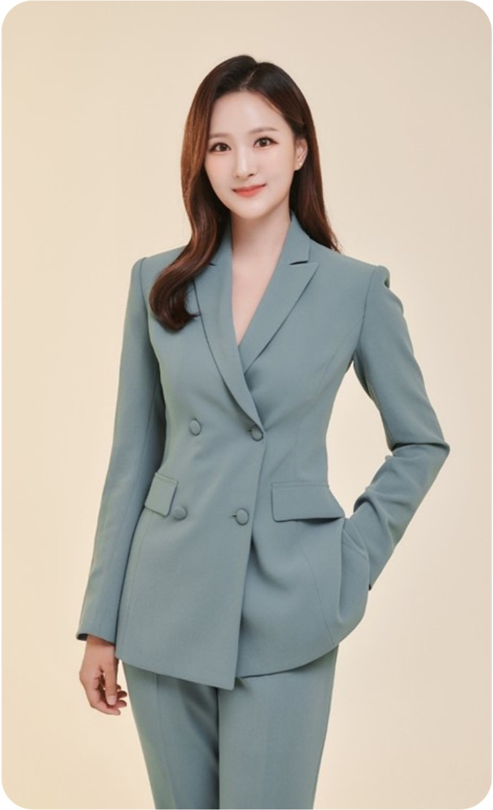
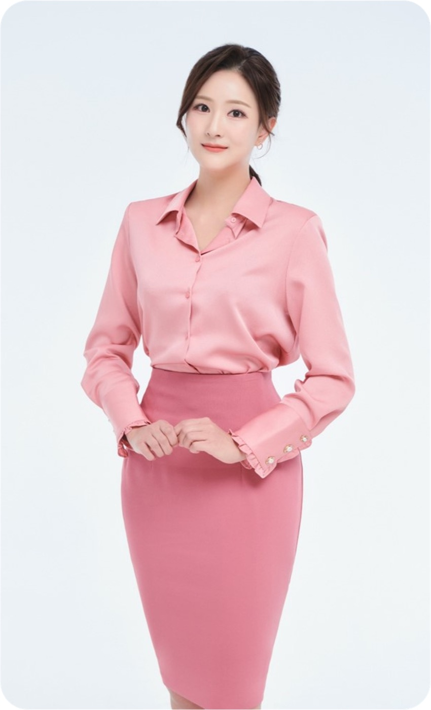
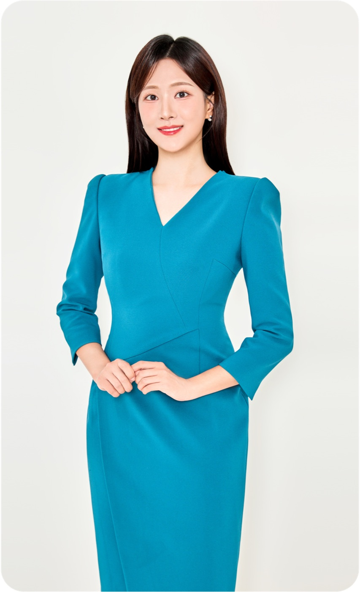
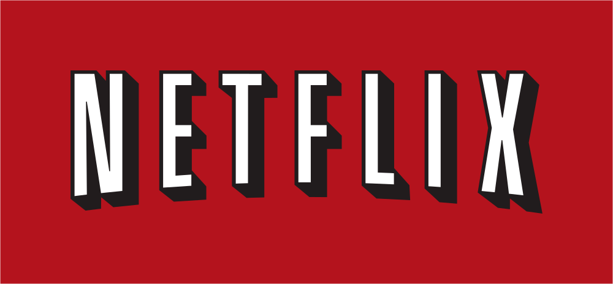
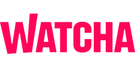

신뢰감 있는 전달력
Trustworthy Delivery
정확한 정보와 안정된 목소리로 시청자와 관객에게 믿음을 전합니다.
ABOUT
방송 뉴스 앵커부터 경제 전문 프로그램 진행, 행사 MC, 모델과 연기까지
다양한 무대에서 안정된 목소리와 따뜻한 존재감으로 메시지를 전합니다.
Trustworthy Delivery
정확한 정보와 안정된 목소리로 시청자와 관객에게 믿음을 전합니다.
Versatile Multi-Casting
뉴스, 경제, 행사, 모델, 연기까지 — 어떤 무대에도 자연스럽게 어울립니다.
Warm Stage Presence
편안하면서도 품격 있는 분위기로 현장의 온도를 높입니다.



PARTNERS
대학, 공공기관, 경제 전문 방송사와 함께 다양한 현장의 신뢰를 만들어왔습니다.
CAREER
2022년부터 지금까지, 방송 뉴스 앵커와 영화·드라마 출연부터
행사·컨퍼런스 진행까지 — 현장에서 쌓아온 활동 이력입니다.

‘퀸메이커’ — 앵커 역 ‘꼭두의 계절’ — 기자 역
‘꼭두의 계절’ — 기자 역
‘사주왕’ — 기자 역2022년부터 현재까지 진행한 주요 행사 및 컨퍼런스입니다. 연도를 선택해 확인해보세요.
PORTFOLIO
VIDEO

지역혁신, 대한민국의 새로운 길 ‘북극항로’ · 진행

전공자율선택제 성과 포럼 · 진행

2025년 하반기 행사 · LIVE 진행
CONTACT
방송 출연, 행사 MC, 광고 모델 등 다양한 협업 제안을 기다리고 있습니다.